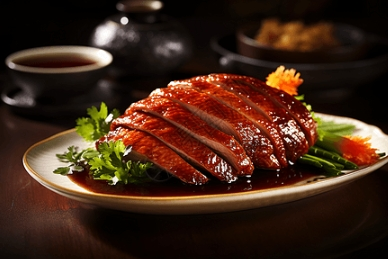
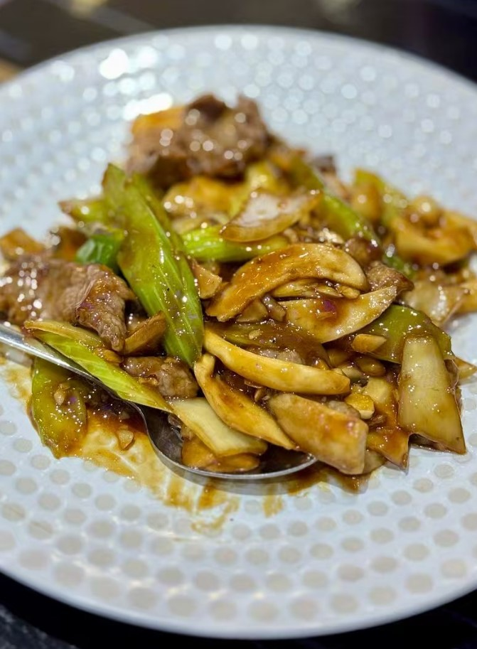
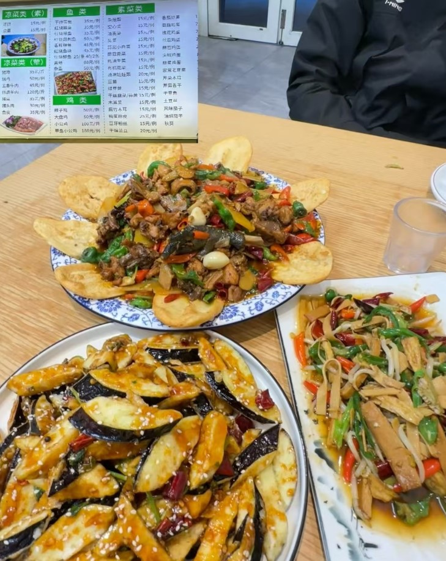
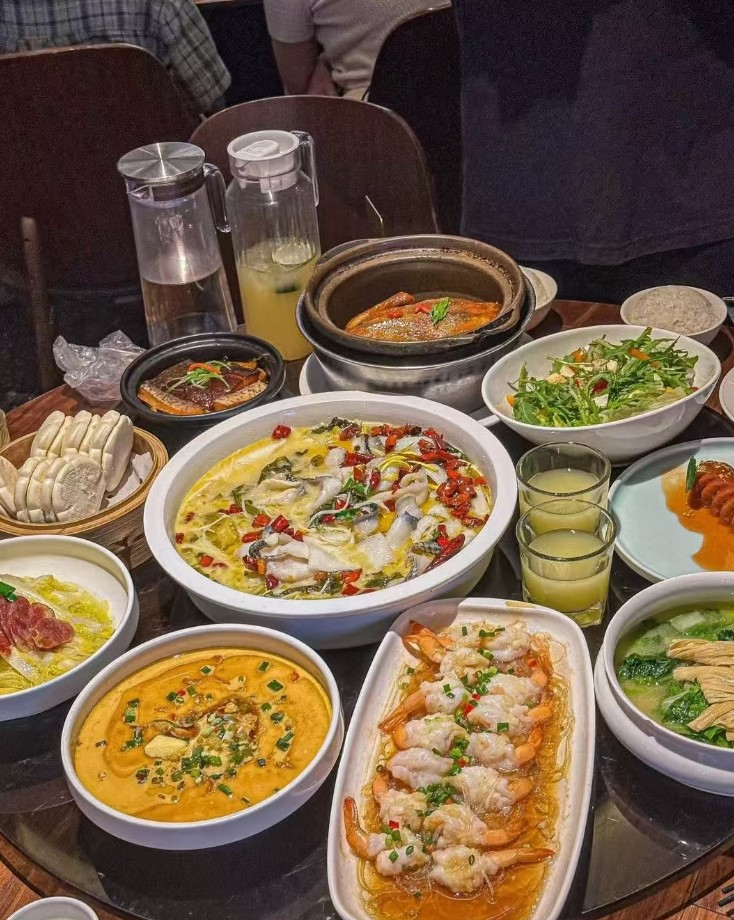
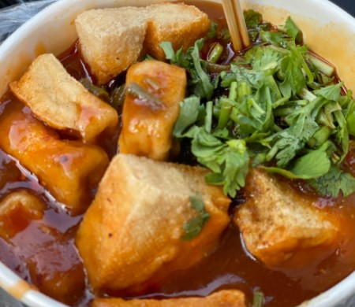
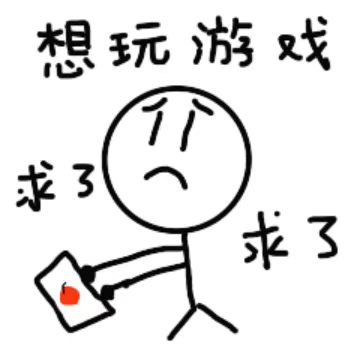

热门美食推荐
品味经典，感受舌尖上的中国

麻婆豆腐
四川经典川菜，麻辣鲜香，历史悠久，家常菜代表。

北京烤鸭
京城名菜，皮酥肉嫩，国宴代表美食。

糖醋鲤鱼
鲁菜经典，造型优美，酸甜适口。

广式叉烧
粤菜特色，蜜汁入味，粤式早茶标配。
品味经典，感受舌尖上的中国
四川经典川菜，麻辣鲜香，历史悠久，家常菜代表。

京城名菜，皮酥肉嫩，国宴代表美食。
鲁菜经典，造型优美，酸甜适口。
粤菜特色，蜜汁入味，粤式早茶标配。
一方水土养一方人，八大菜系各有千秋







藏在街头巷尾的人间至味

陕西经典小吃，白吉馍夹卤肉，外皮酥脆，肉香四溢，被誉为"中式汉堡"。

麻辣小面，山城市井美食代表，一碗面浓缩了重庆人的火辣性格。

闻起来臭，吃起来香。外焦里嫩，浇上辣椒酱汁，是湘式街边美食的灵魂。

武汉人的早餐灵魂，碱面拌芝麻酱，香气浓郁，口感筋道，是江城的味觉名片。

津门老字号，薄皮大馅十八个褶，鲜香多汁，百年传承的经典味道。

一清二白三红四绿五黄，拉面技艺精湛，汤鲜味美，是西北面食文化的代表。

桂林山水甲天下，米粉亦甲天下。细滑米粉配卤水，鲜香爽口，是广西的味觉符号。

苗家特色酸汤以番茄发酵而成，酸辣开胃，鱼肉鲜嫩，是贵州美食的精髓。

金陵名小吃，鸭血嫩滑、粉丝弹韧，配上鸭肝鸭肠，一碗汤尽显南京鸭文化。
跨越国界的味蕾之旅，探索世界各地的经典美味

醋饭搭配新鲜鱼生，讲究食材鲜度与刀工，是日本料理的代表性美食。

浓郁猪骨、酱油、味噌等多种汤底，配以弹牙面条，是日本国民美食。

海鲜与时蔬裹薄面糊油炸，外酥内嫩，蘸天汁食用，体现日式炸物的极致追求。

大白菜经辣椒粉、蒜姜腌制发酵，酸辣爽脆，是韩国餐桌上不可或缺的灵魂配菜。

炭火烤制五花肉或牛里脊，搭配生菜蒜片包食，是韩国社交聚餐的首选。

午餐肉、泡面、年糕、泡菜一锅炖煮，源于战争年代的创意，如今风靡全球。

精致分格的食盒中搭配饭食、炸物、腌菜与玉子烧，是日本饮食美学的缩影。

童子鸡腹中塞入糯米、人参、红枣慢炖，汤浓味鲜，是韩国夏日进补的经典佳品。

精选和牛薄切后炭火快烤，蘸酱或撒盐食用，追求肉质本身的极致油脂香气。

酸辣鲜甜四味合一，香茅、南姜、柠檬叶交织出层次丰富的热带风味汤品。

新鲜芒果配椰浆糯米，甜而不腻，是泰式甜品的巅峰之作。

清透牛骨汤底配细滑河粉，佐以九层塔、豆芽、青柠，清爽鲜美，越南第一美食。

米纸包裹虾肉、米粉与生菜，蘸鱼露酱汁，清爽低脂，越南最具代表性的家常小食。

甜酱油炒制的米饭配虾片、煎蛋和沙爹，是印尼的国民美食。

鸡肉嫩滑，米饭用鸡油鸡汤烹制，搭配辣椒酱和姜蓉，新加坡国菜。

猪肋排配当归、党参等药材炖煮，汤浓肉烂，兼具食补功效的南洋经典。

整只乳猪填入香料后炭火慢烤至皮脆肉嫩，是菲律宾节庆宴席的压轴大菜。

发酵茶叶配花生、豆角、番茄拌食，酸香微苦，缅甸独有的开胃小食。

数十种香料调配而成的浓稠酱汁，配以鸡肉或羊肉，配馕饼食用，风味浓郁。

面团甩制薄如蝉翼，煎至金黄酥脆，配咖喱蘸食，街头常见的人气小吃。

鸡肉以酸奶和香料腌制后放入坦都炉高温烤制，外焦里嫩，色泽鲜红诱人。

旋转烤架上层层叠叠的腌制肉串，切片后夹饼食用，中东街头最具辨识度的美食。

精选牛羊肉配洋葱腌制后炭火慢烤，肉质鲜嫩多汁，是波斯料理的精髓。

鹰嘴豆与芝麻酱、柠檬汁搅拌成泥，淋上橄榄油，中东最经典的开胃小食。

旋转烤肉切片卷入薄饼，配蔬菜与特制酱料，中东版"鸡肉卷"，风靡全球。

薄如蝉翼的千层酥皮夹碎坚果，淋上蜂蜜糖浆，中东地区最受欢迎的经典甜点。

新鲜花蟹配椰浆与斯里兰卡咖喱粉烹煮，香辣鲜甜，是印度洋岛国的招牌海鲜。

薄底番茄芝士披萨发源于那不勒斯，简约食材的完美组合，西餐文化标志性食物。

形状种类多达数百种，配以番茄、奶油、橄榄油等不同酱汁，变化万千。

蜗牛填入蒜香黄油焗烤，鲜嫩入味，是法国高级料理的经典前菜。

藏红花染色的金黄米饭，配以虾、贝、鱿鱼等海鲜，是西班牙的国菜级美食。

品种超过1500种，从纽伦堡小香肠到巴伐利亚白肠，配酸菜和芥末，德国人的骄傲。

裹面糊炸鳕鱼配粗薯条，撒盐浇醋，英国最经典的国民街头食物。

茄子、肉酱、白酱层层叠放焗烤而成，地中海风味的代表性烘焙菜肴。

酥脆千层外皮包裹焦香嫩滑的蛋奶馅，经澳门传入中国后风靡全国，经典西式甜点。

格鲁耶尔与埃曼塔尔芝士融化后蘸面包块食用，是阿尔卑斯山区冬日里的温暖仪式。

牛肉饼配生菜番茄芝士夹面包，美国快餐文化的象征，风靡全球的经典美味。

猪肋排以低温烟熏数小时，刷上浓郁烧烤酱，骨肉分离，美国南方的灵魂料理。

酥皮包裹肉桂苹果馅烤至金黄，配香草冰淇淋食用，美国最具标志性的传统甜点。

玉米薄饼卷入肉碎、洋葱、香菜、辣酱，搭配牛油果酱，拉丁美洲的灵魂食物。

玉米饼卷入鸡肉或芝士后浇上辣椒酱与酸奶油焗烤，是墨西哥家庭餐桌上的经典。

长剑串肉旋转炭烤，服务生逐桌切片，肉食者的天堂，南美烧烤文化巅峰。

新鲜鱼肉以柠檬汁腌制，配洋葱辣椒，酸辣清爽，南美洲最负盛名的海鲜料理。

潘帕斯草原放养牛肉以低温炭火慢烤数小时，肉质鲜嫩多汁，南美烧烤的巅峰之作。

薯条浇上肉汁再铺满奶酪凝块，热融拉丝，加拿大魁北克省诞生的国民小吃。

酥皮包裹牛肉馅料烤制，搭配番茄酱食用，澳大利亚人最热爱的国民小吃。

低脂高蛋白的袋鼠肉以煎烤方式烹制，口感类似牛肉，澳大利亚独有的特色野味。

外脆内软的蛋白霜蛋糕铺满鲜奶油与时令水果，澳新两国引以为豪的经典甜品。

天然牧场放养的羊羔，简单调味后慢烤，肉质鲜嫩无膻味，新西兰代表性菜肴。

锥形陶盖锁住水汽慢炖，牛羊肉配杏干与香料，北非最具特色的焖煮料理。

苔麸发酵制成的酸味薄饼，搭配各种炖菜手撕食用，东非独特的饮食文化体验。

南非传统Braai以木炭明火慢烤香肠、牛排和羊腿，是南非人社交聚会的灵魂仪式。

通心粉、扁豆、鹰嘴豆混合浇上番茄酱和炸洋葱，埃及街头最具人气的国民美食。

牛尾配番茄辣椒酱长时间炖煮至酥烂，配木薯团食用，西非最具代表性的家常炖菜。
考验你的美食知识储备，看看你是几级吃货！

根据图片和线索猜出美食名称，挑战你的美食认知极限！
点击开始游戏根据提示猜出美食名称，看看你能答对多少题！
提示：正在加载...
吃的是美食，品的是文化与科学
中华饮食文化历经数千年发展，博大精深。不同地域的气候、物产、历史传统造就了各具特色的饮食习惯。从北方的面食文化到南方的米饭体系，从川渝的麻辣到江浙的清甜，食材选择与烹饪手法千差万别，共同构成了一幅绚丽多彩的中华美食画卷。每一道菜背后，都蕴含着一方水土的人文故事。

大火热油快速翻炒，锁住食材水分和营养，成菜口感脆嫩。川菜中的宫保鸡丁、粤菜中的爆炒虾仁均属此类，讲究"锅气"十足。
小火慢炖使食材充分入味，汤汁浓郁醇厚。广东老火靓汤、东北酸菜炖粉条都是炖煮的经典，时间是最好的调味料。
以蒸汽加热保留食材原汁原味，最大程度保存营养。清蒸鲈鱼、蒸蛋羹是代表，粤菜尤为推崇此法，追求"鲜"字当头。
先煎后炖，酱油与糖色赋予食材红亮色泽和浓郁酱香。红烧肉、红烧鱼是国民级家常菜，咸甜交融令人回味无穷。
新鲜食材切配后以调料拌制，无需加热，清爽开胃。凉拌黄瓜、夫妻肺片均为经典，是夏日餐桌上的消暑利器。
利用盐、糖或微生物发酵保存食材并赋予独特风味。豆腐乳、酸菜、泡菜、火腿均源于此法，跨越千年的食品保鲜智慧。